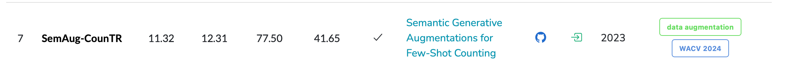
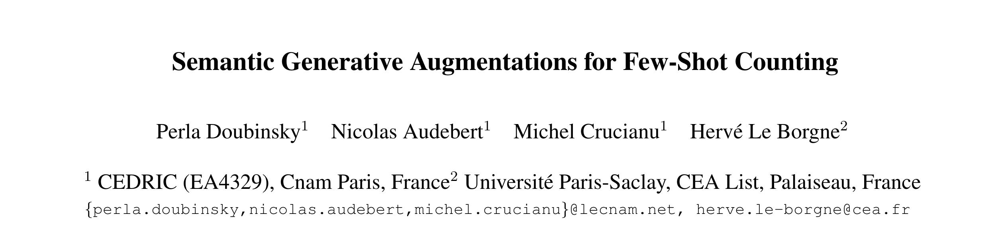

rank7 SemAug CountTR


标题：Semantic Generative Augmentations for Few-Shot Counting 小样本计数 语义生成增强
本文❤️：
- 为了使生成的图像 的目标数量和原图像保持不变，使用 stable diffusion合成图像模型，并采用双条件：prompt & 密度图
- 为了解决生成图像总是跟训练图像相同的问题，提出增强图像多样性的策略：随机打乱字幕描述，目的是为了创建没见过但是合理的 对象类型和空间分布
合成图像 & 多样化策略
Abstract¶
（文生图扩散模型）
With the availability of powerful text-to-image diffusion models, recent works have explored the use of synthetic data to improve image classification performances.
随着强大的文本到图像扩散模型的可用性，最近的工作探索了使用合成数据来提高图像分类性能。
These works show that it can effectively augment or even replace real data.
这些工作表明，它可以有效地增强甚至替代真实数据。
In this work, we investigate how synthetic data can benefit few-shot class-agnostic counting.
在这项工作中，我们研究了合成数据如何有利于小样本类别无关计数。
合成图像的第一个要求：合成的图片 目标数量是相等的
This requires to generate images that correspond to a given input number of objects.
这就需要生成与给定的输入物体数量相对应的图像。
However, text-to-image models struggle to grasp the notion of count.
然而，文本到图像的模型很难把握计数的概念。
合成图像的监督信号：prompt和密度图；具体用的模型：Stable Diffusion
We propose to rely on a double conditioning of Stable Diffusion with both a prompt and a density map in order to augment a training dataset for few-shot counting.
我们提出使用稳定扩散( Stable Diffusion )的提示图和密度图的双重条件来增加少样本计数的训练数据集。
Due to the small dataset size, the fine-tuned model tends to generate images close to the training images.
由于数据集规模较小，微调后的模型倾向于生成接近训练图像的图像。
为了解决 图像总是接近训练图像的问题，提出 随机打乱图像之间的字幕
We propose to enhance the diversity of synthesized images by exchanging captions between images thus creating unseen configurations of object types and spatial layout.
我们提出通过在图像之间交换字幕来增强合成图像的多样性，从而创建看不见的对象类型和空间布局配置。
（结果）Our experiments show that our diversified generation strategy significantly improves the counting accuracy of two recent and performing few-shot counting models on FSC147 and CARPK.
我们的实验表明，我们的多样化生成策略显著提高了FSC147和CARPK上最近执行的两个少样本计数模型的计数准确率。
数据集：
- FSC147
- CARPK
引入-贡献¶
To tackle few-shot counting, we propose to synthesize unseen data with Stable Diffusion conditioned by both a textual prompt and a density map.
为了解决小样本计数问题，我们提出使用稳定扩散来合成看不见的数据，其条件是文本提示和密度图。
stable diffusion？
Note
① 使用stable diffusion合成数据
② 监督信号：文本提示和密度图
We thus build an augmented FSC dataset that is used to train a deep counting network.
因此，我们构建了一个增广的FSC数据集，用于训练深度计数网络。
The double conditioning, implemented with ControlNet [42], allows us to generate novel synthetic images with a precise control, preserving the ground truth for the counting task.
用controlnet网络[ 42 ]实现的双重条件化，可以使我们在精确控制下生成新的合成图像，从而为计数任务保留基本的真值。
It deals well with large numbers of objects, while current methods fail in such cases [19, 27].
它可以很好地处理大量的对象，而目前的方法在这种情况下失效[ 19、27]。
To increase the diversity of the augmented training set, we swap image descriptions between the n available training samples, leading to $\frac{n(n−1)}{2} $ novel couples, each being the source of several possible synthetic images.
为了增加扩充训练集的多样性，我们在n个可用的训练样本之间交换图像描述，得到n ( n-1 ) 2个新的对子，每个对子都是若干可能的合成图像的来源。
However, we show that some combinations do not make sense and lead to poor quality samples.
然而，我们表明一些组合没有意义，并导致质量较差的样本。
Therefore, we only select plausible pairs, resulting in improved augmentation quality.
因此，我们只选择了似是而非的配对，从而提高了增强质量。
We evaluate our approach on two class-agnostic counting networks, namely SAFECount [41] and CounTR [6]. We show that it significantly improves the performances on the benchmark dataset FSC147 [28] and allow for a better generalization on the CARPK dataset [14].
我们在SAFECount [ 41 ]和Coun TR [ 6 ]两个类不可知计数网络上对我们的方法进行了评估。我们证明了它在基准数据集FSC147 [ 28 ]上的性能显著提高，并且在CARPK数据集[ 14 ]上具有更好的泛化能力。
-
对比模型：SAFECount [41] and CounTR [6]
-
benchmark：FSC147、CARPK
- 本文提出的是 对数据输入的多样性进行扩充
结论¶
7 Conclusion
由扩散模型合成数据提高FSC计数性能
We show that synthetic data generated by diffusion models improve deep models for few-shot counting.
以密度图为条件，采用预训练的文生图模型
We adapt a pretrained text-to-image model with a density map conditioning and
我们提出的多样化策略：利用字幕相似性，生成合理的但是 混合了不同训练图像和语义和几何信息
we propose a diversification strategy that exploits caption similarities to generate unseen but plausible data that mixes the semantics and the geometry of different training images.
展示了选择 compatible images （相容的图像？）合成图像，可以提高模型性能|| 我记得有一个模型的拼接图像来着，哪篇论文来着？
We show that selecting compatible images improves synthetic image quality with beneficial effects on model performance.
我们提出的多样性数据合成策略提高了计数性能，FSC147 和 CARPK
We demonstrate that learning with our diverse synthetic data leads to improved counting accuracy on FSC147 and state of the art generalization on CARPK.
我们提出的数据合成策略经过微调可以用于其他领域：目标检测和语义分割
This strategy could be adapted to other tasks requiring fine grained compositionality, such as object detection and semantic segmentation.
我们的多样化策略：通过在密度图引入合适的相似性度量、通过文本之间相互交换和密度图的控制，能够进一步扩展
Our diversification scheme could be further extended by swapping both the captions and the density controls, by introducing a suitable similarity metric that operates on the density maps.
引入¶
1 Introduction
P1
目标计数的应用领域
Counting objects is a task with applications in many domains e.g. manufacturing, medicine, monitoring, that involve different types of objects.
特定目标计数 →FSC CAC计数
两个突出特点：① bounding boxes (cf. Fig. 2), ② an extract-then-match manner [21].
(后面有人创新，就把这个then改成 and)
While earlier works focused on learning specialized networks [2, 7, 14, 16], Few-Shot object Counting (FSC) [31] was recently introduced to train models that can count any object, including from categories outside the training data. Methods tackling FSC rely on exemplar objects annotated with bounding boxes (cf. Fig. 2), in an extract-then-match manner [21].
如何对图像特征 和 样例框特征 进行匹配：① correlation maps [31, 41] ②attention [6, 9]
The features of the exemplars and query image are compared using e.g. correlation maps [31, 41] or attention [6, 9]. Matched features are then transformed into a density map indicating at each location in the image the density of the objects of interest. The density map is then summed to obtain the predicted count.
P2
数据集生成：从GAN → 扩散模型
提出challenge FSC147数据集有限 The reference dataset for FSC, namely FSC147 [31], contains a limited amount of data (3659 train images) thus bounding限制 the performances of counting networks [30].
扩充数据集很麻烦 Expanding such a dataset is costly as the annotation process requires pinpointing the center of each object present in a query image, with a potentially high number of occurrences.
solutions To overcome the small dataset size, Ranjan et al. [30] augment FSC147 using a GAN to diversify the image styles.solutions**① Ranjan et al. [30]这个人用GAN 多样化图像的格式**
Diffusion models have now surpassed GANs owing to their training stability and lower sensitivity to mode collapse. 现状：扩散模型🔥了
These models produce more effective and diverse augmentations [12, 37, 39]. Recent works mostly aim at augmenting classification datasets e.g. ImageNet [8], where augmentations are generated by prompting the models with the image labels. 扩散模型🔥的证据，且主要🔥在分类数据集，通过图像标签来提示模型
**motivation 到了我们要讨论的问题：没🔥到计数数据集**This fails to produce satisfying images for counting datasets as text-to-image models struggle to generate the correct number of objects [26]. 因为文本到图像很难产生 对象数量正确的数据集
做的一些努力 Some works tackle improving compositionality in vision-language models [19, 25, 27] but are limited to small numbers of objects. 一些工作致力于提高视觉语言模型[ 19、25、27]的组合性，但仅限于少量对象。
Other works add more control to pre-trained text-to-image models [15, 23, 42].其他工作在预训练的文本到图像模型[ 15、23、42]中添加了更多的控制。
P3 本文的：Stable Diffusion & ControlNet [42]
我们的工作 ⭐️**To tackle few-shot counting, **we propose to synthesize unseen data with Stable Diffusion conditioned by both a textual prompt and a density map.
基于文本提示和密度图 使用扩散模型 生成数据
We thus build an augmented FSC dataset that is used to train a deep counting network.
因此，我们构建了一个增广的FSC数据集，用于训练深度计数网络。
The double conditioning, implemented with ControlNet [42], allows us to generate novel synthetic images with a precise control, preserving the ground truth for the counting task.
用controlnet网络[ 42 ]实现的双重条件化，可以使我们在精确控制下生成新的合成图像，从而为计数任务保留基本的真值。
It deals well with large numbers of objects, while current methods fail in such cases [19, 27].
它可以很好地处理大量的对象，而目前的方法在这种情况下失效[ 19、27]。
To increase the diversity of the augmented training set, we swap image descriptions between the \(n\) available training samples, leading to $\frac{n(n−1)}{2} $ novel couples, each being the source of several possible synthetic images.
为了增加扩充训练集的多样性，我们在n个可用的训练样本之间交换图像描述，得到n ( n-1 ) 2个新的对子，每个对子都是若干可能的合成图像的来源。
However, we show that some combinations do not make sense and lead to poor quality samples.
然而，我们表明一些组合没有意义，并导致质量较差的样本。
Therefore, we only select plausible pairs, resulting in improved augmentation quality.
因此，我们只选择了似是而非的配对，从而提高了增强质量。
We evaluate our approach on two class-agnostic counting networks, namely SAFECount [41] and CounTR [6].
我们在SAFECount [ 41 ]和Coun TR [ 6 ]两个类不可知计数网络上对我们的方法进行了评估。
We show that it significantly improves the performances on the benchmark dataset FSC147 [28] and allow for a better generalization on the CARPK dataset [14].
我们证明了它在基准数据集FSC147 [ 28 ]上的性能显著提高，并且在CARPK数据集[ 14 ]上具有更好的泛化能力。
总结¶
本文的引入是三段：
第一段：目标计数的应用领域 经历了从特定物体 到 通用物体
第二段：介绍数据集合成方法：从GAN 到 Stable Diffusion
第三段：指出本文贡献，再次强调
- 生成图像：Stable diffusion
- 合成图像的目标数量 和 参考图像 是相同的
- prompt 和 density map同时指导图像合成
- 合成图像的多样性策略：
- swap image descriptions ；随机交换图像描述
相关工作¶
总结：本文的相关工作从两方面展开：
Learning with Generated Data
Few-shot Object Counting
生成数据的学习 和 小样本计数
第一段：
第一部分：Learning with Generated Data
（现状：）
Improvements in image synthesis using generative models have sparked great interest in generating fake images to train deep neural networks.
使用生成模型进行图像合成的改进激发了人们对生成假图像以训练深度神经网络的极大兴趣。
（从GAN开始）
GANs were the first popular models to synthesize data for image classification [1, 5, 17], crowd counting [40] and image segmentation [43].
GANs是第一个流行的用于图像分类[ 1、5、17]、人群计数[ 40 ]和图像分割[ 43 ]的数据合成模型。
（到现在的扩散模型：DDPM、 Latent Diffusion ）
Nowadays, diffusion models such as DDPM [13] or Latent Diffusion [32] seem to outperform GANs, demonstrating more stable training, better coverage of the training distribution and higher image quality.
如今，扩散模型如DDPM [ 13 ]或Latent Diffusion [ 32 ]似乎优于GANs，显示出更稳定的训练，更好的训练分布覆盖率和更高的图像质量。
（扩散模型的发展，以文本为条件的扩散模型）
The availability of powerful text-conditioned diffusion models 文本条件扩散模型 [24, 29, 32, 33] has led to many works exploring how to leverage synthetic data for computer vision 利用生成数据进行计算机视觉任务, e.g. image classification in low-data regime [12], zero/few-shot learning [37, 39], ImageNet classification [3, 4, 34] and self-supervised learning [38].
强大的文本条件扩散模型[ 24、29、32、33]的出现，引发了许多研究如何利用合成数据进行计算机视觉的工作。
These works focus on how to reduce domain gap 减少领域鸿沟 [12], improve the prompts 改进提示 using e.g. text-to-sentence model [12] or WordNet [34] and increase diversity 增加多样性 by optimizing the guidance scale [3, 34, 37]. 优化指导尺度
这些工作主要集中在如何减少领域鸿沟[ 12 ]，使用文本到句子模型[ 12 ]或词网[ 34 ]来改进提示，并通过优化指导尺度[ 3,34,37]来增加多样性。
This body of literature consistently demonstrates how generated data allow deep networks to learn more robust representations and improve generalization for image classification.
这组文献一致地展示了生成数据如何让深度网络学习更鲁棒的表示，并提高图像分类的泛化性。
我们在图像合成领域的工作：
❤️：To bring the power of synthetic data to counting, we propose to condition diffusion models not only on text prompts but also on counting density maps to generate images with the correct number of objects in the desired spatial configuration.
- 条件扩散模型：基于文本提示和密度图
- 在期望的空间位置上，生成有正确数量的图片
We focus more specifically on few-shot class-agnostic object counting. Compared to image classification, this task involves small datasets and local spatial understanding, as objects can be small and follow complex layouts.
我们更专注于少样本类无关物体计数。与图像分类相比，这项任务涉及小型数据集和局部空间理解，因为对象可以是小型的，并且遵循复杂的布局。
The generated data needs a level of compositionality that current generative models, including diffusion models 扩散模型, struggle to achieve.
生成的数据需要一种 组合性水平 ，这是当前的生成模型，包括**扩散模型**，在实现上存在困难的。
生成数据需要组合，这是现在的生成模型，包括扩散模型，难以实现的。
To bring the power of synthetic data to counting, we propose to condition diffusion models 条件扩散模型 not only on text prompts but also on counting density maps 文本提示+密度图 to generate images with the correct number of objects 生成有正确对象数量的图片 in the desired spatial configuration. 在期望的空间位置上
为了将合成数据的能力用于计数，我们提出不仅在文本提示上，而且在计数密度图上对扩散模型进行条件化，以生成所需空间配置中具有正确数量对象的图像。
We exploit this double control to generate diversified unseen data by prompting the model with novel combinations of the controls.
我们利用这种双重控制来生成多样化的未见数据，通过使用新的控制组合来促使模型。
Tip
我写这部分文献综述的时候，也从GAN开始，写到diffusion，最后到关于目标计数
第二段
第二部分：Few-shot Object Counting 小样本计数的发展
CAC任务的定义
The goal of few-shot class agnostic object counting is to count how many instances of objects of any arbitrary category there are in a given image, by leveraging only a few exemplars of the category of interest.
文献1：FamNet
This was initially formulated as matching exemplars and image patch features [21]. FSC147 [31] was later put forward as the main dataset for this task, with an open set train and test split to evaluate generalization to unseen object categories. Its authors introduced FamNet, a deep net trained to infer density maps from feature similarities.
文献2：BMNet
In the same lineage, BMNet [36] refines the similarity map by learning the similarity metric jointly with the counting network.
文献3：SAFECount
In SAFECount [41], the similarities are used to fuse exemplars features into the query image features. The density map is then predicted from the enhanced features.
文献4、5：CounTR [6] and LOCA [9]
Other works e.g. CounTR [6] and LOCA [9] focus on improving the feature representations using a Transformer backbone as the visual encoder and injecting information about the exemplars’ shape in the network [9].
文献6：与我们工作最相关的文献 Vicinal Couting Network from Rajan et al. [30] → 说明 图像增强可以显著提高计数性能
The closest comparison to our work is the Vicinal Couting Network from Rajan et al. [30]. It augments FSC147 with generated data by training a conditional GAN jointly with the counting network, producing augmentations that preserve the image content while modifying its visual appearance. While outperformed by later models, it introduced the idea that well-chosen augmentations can significantly boost counting accuracy.
我们的工作：多样性合成策略：不仅合成外观，还可以改变内容；使用的文生图的大型预训练模型
In this work, we leverage large pre-trained text-to-image diffusion models to produce diverse augmentations that not only alter the appearance, but are also able to change the content, to synthesize augmentations with a variety of object semantics.
24·11·18
todo：method